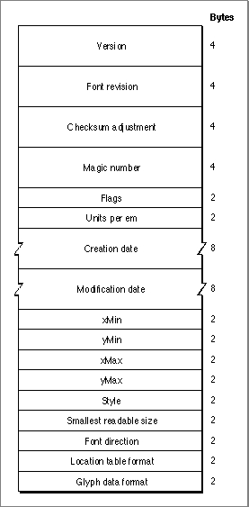

The Font Header Table
The font header table, with a tag name of'head', is shown in Figure 4-19. This table contains global information about the font: the font version number; creation and modification dates; revision number; basic typographic data that applies to the font as a whole, such as the direction in which the font's glyphs are most likely to be written; and other information about the placement of glyphs in the em square.Figure 4-19 The font header table

For a complete description of the individual fields in this table, see the TrueType Font Format Specification. Application developers may be interested in the following fields:You can use the value of the checksum adjustment element to verify the integrity of the data in the font, to confirm that no data has been changed, or to compare two similar fonts. This value is the designer's checksum value for the font. The checksum value is an unsigned long word that you compute as follows:
- Version. The version number of the table, as a fixed-point value. This value is $00010000 if the version number is 1.0.
- Font revision. A fixed-point value set by the font designer.
- Checksum adjustment. The checksum of the font, as an unsigned long integer.
- Units per em. This unsigned integer value represents a power of 2 that ranges from
64 to 16,384. Apple's TrueType fonts use the value 2048.- Creation date. The date this font was created. This is a long date-time value of data type
LongDateTime, which is a 64-bit, signed representation of the number of seconds since Jan. 1, 1904.- Modification date. The date this font was last modified. This is a long date-time value of data type
LongDateTime, which is a 64-bit, signed representation of the number of seconds since Jan. 1, 1904.- Smallest readable size. The smallest readable size for the font, in pixels per em.
TheRealFontfunction, which is described in the section "RealFont" beginning on page 4-48, returnsFALSEfor a TrueType font if the requested size is smaller than
this value.- Location table format. The format of the location table (tag name:
'loca'), as an signed integer value. The table has two formats: if the value is 0, the table uses the short offset format; if the value is 1, the table uses the long offset format. The location table is described in the section "The Location Table" on page 4-79.Listing 4-2 provides an example of a function to compute the checksum of a font. This example includes type declarations for the outline font header information and uses the
- Set the value of the checksum word to 0 (so that it does not factor into the value that you are computing).
- Calculate the checksum for each table in the outline font resource and store the table's checksum in the table directory.
- Now sum the entire font as an unsigned, 32-bit value.
- Subtract the sum from $B1B0AFBA, which is a magic number for this checksum computation. Store the result.
MyCalcTableChecksumfunction (from Listing 4-2 on page 4-72) to compute the checksum for each table.Listing 4-3 Calculating the checksum of a font
TYPE DirectoryEntry = RECORD tag: OSType; checksum: LongInt; offset: LongInt; lngth: LongInt; END; OffsetTable = RECORD version: LongInt; numTables: Integer; searchRange: Integer; entrySelector: Integer; rangeShift: Integer; tableDir: ARRAY[1..1] OF DirectoryEntry; { actually 1..numTables } END; SfntPtr = ^OffsetTable; SfntHandle = ^SfntPtr; HeaderTable = RECORD version: LongInt; fontRevision: LongInt; checkSumAdjustment: LongInt; magicNumber: LongInt; flags: Integer; unitsPerEm: Integer; created: LongDateTime; { defined in Script.p } modified: LongDateTime; xMin: Integer; yMin: Integer; xMax: Integer; yMax: Integer; macStyle: Integer; lowestRecPPEM: Integer; fontDirectionHint: Integer; indexToLocFormat: Integer; glyphDataFormat: Integer; END; HeaderTablePtr = ^HeaderTable; FUNCTION CalcSfntChecksum (sp: SfntPtr): LongInt; CONST checkSumMagic = $B1B0AFBA; VAR i: Integer; cs, sum, size: LongInt; htp: HeaderTableptr; BEGIN sum := 0; FOR i := 1 TO sp^.numTables DO BEGIN IF sp^.tableDir[i].tag = 'head' THEN BEGIN htp := HeaderTablePtr(ord(sp) + sp^.tableDir[i].offset); htp^.checkSumAdjustment := 0; cs := CalcTableChecksum(LongPtr(htp), SizeOf(HeaderTable)); END ELSE cs := MyCalcTableChecksum( LongPtr(ord(sp) + sp^.tableDir[i].offset), sp^.tableDir[i].lngth); sp^.tableDir[i].checksum := cs; sum := sum + cs; END; size := SizeOf(OffsetTable) + (sp^.numTables - 1) * SizeOf(DirectoryEntry); sum := sum + CalcTableChecksum(LongPtr(sp), size); CalcSfntChecksum := checkSumMagic - sum; { to be written into htp^.checkSumAdjustment } END;